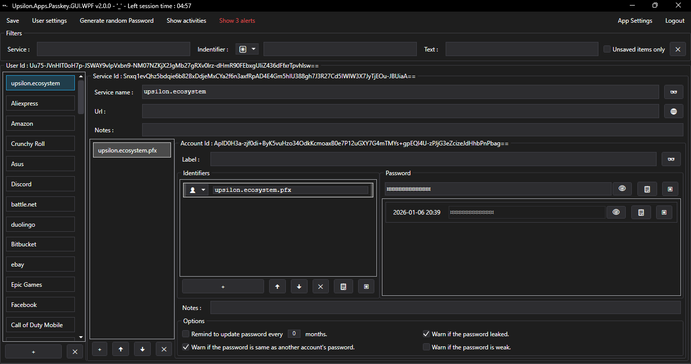
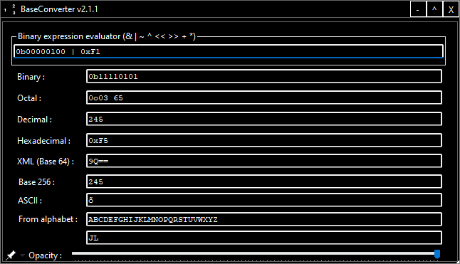
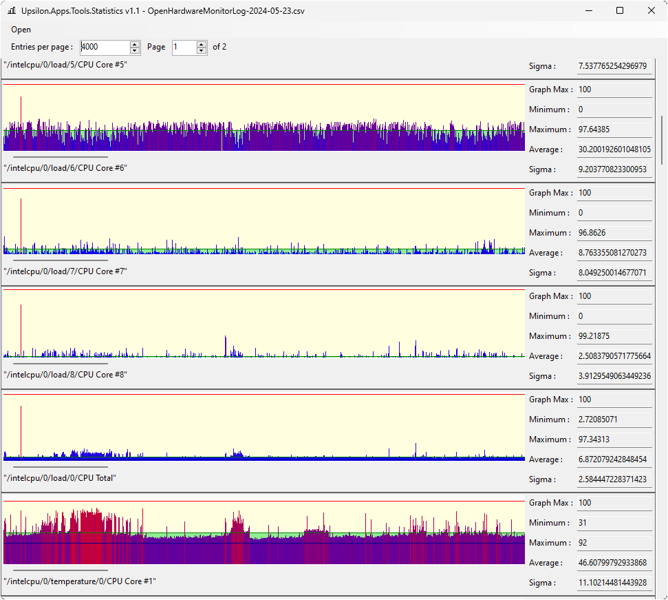
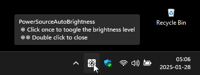
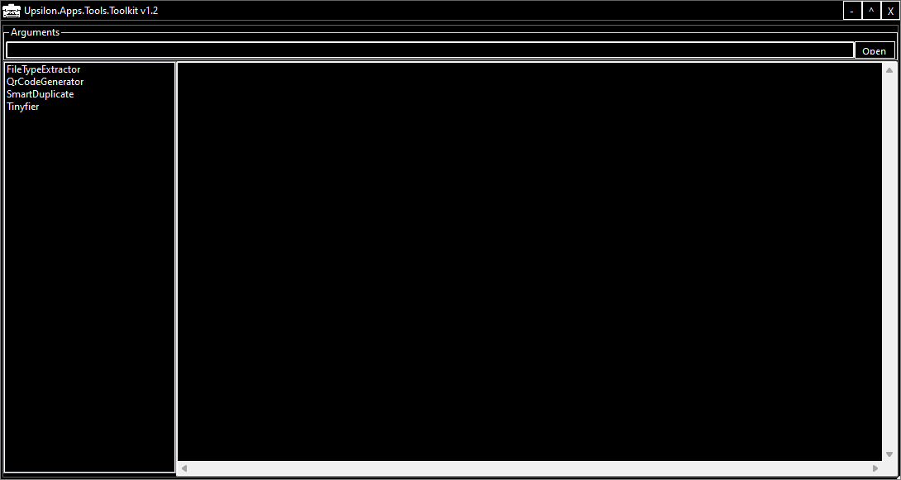

Having started coding at the age of 15, I had the opportunity to explore many aspects of software development.
I first started with C, which taught me the basics of programming — and, more importantly, algorithms and how computers work. I continued teaching myself C++, where I discovered object-oriented programming. At the same time, for the sake of variety, I studied PHP to open up web development, and I discovered Windows automation with AutoIt.
During my first year at the Higher Polytechnic Institute of Madagascar, I attended presentations of projects by third-year students and discovered C# and .NET. The speed with which anyone could create Windows applications with this technology impressed me, and I made it my main focus.
Over the years I have also tried other languages and technologies such as Java, JavaScript and Python, but I have not gone as deep into them as the C/C++/C# family.

During the first two years of my professional life, I developed a number of tools independently, and it was common to rebuild similar features several times because they were shared across projects.
That is how Upsilon Ecosystem was born. It has two parts: Upsilon.Common, a shared codebase for all my projects, and Upsilon.Apps for the applications and tools.
You can read the Upsilon.Common documentation and download the latest version (ZIP).
You don't need to install dozens of dependencies. All you need is the Upsilon Ecosystem app and the .NET 6 runtime.
The graphical interface is customizable. In addition to the components offered by .NET, Upsilon Ecosystem also provides original components.
Upsilon Ecosystem does not rely on a commercial database: it has its own, and uses a custom encryption system.
Listed below are some of the most representative projects I have designed.
They range from a simple toolkit grouping several small tools to more advanced applications, such as a local password manager.

A fully offline and secure password manager. It supports multiple users, multiple accounts per service, a fully customizable password generator, and more.
Download the installer or the portable version.

A tool for converting integers from any base to any other base, with support for logical operators (And, Or, Not, Xor, Shift), addition and multiplication. The size of the number is virtually unlimited.
Download the installer or the portable version.

This tool can display a comma-separated CSV data file as a graph with statistics (minimum, maximum, average, and more). Each column in the CSV is shown as a row in the tool.
Download the installer or the portable version.

This tool automatically changes the screen brightness: 100% when the power source is plugged in, and 0% when it is unplugged. A single click on the notification icon also toggles the brightness.
Download the installer or the portable version.

A toolkit that groups several lightweight tools.
Download the installer or the portable version.
Copyright © Yassin Lokhat
Distributed By Themewagon